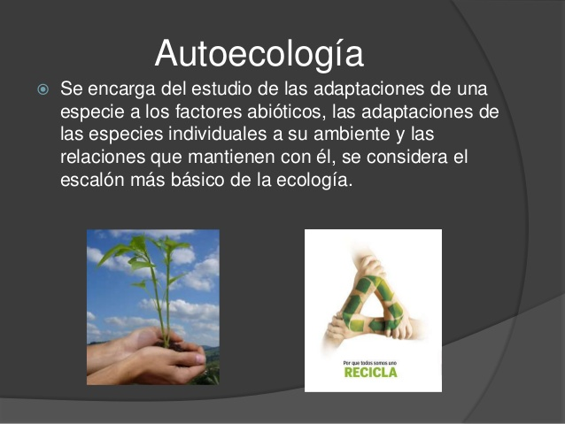
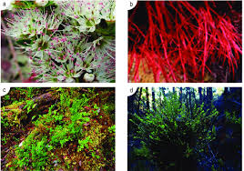

LA AUTOECOLOGIA ES LA PROXIMA DE LAS RAMAS DE ECOLOGIA QUE QUEREMOS PRESENTAR.
AUNQUE COMUNMENTE SE CONFUNDE CON LA ANTERIOR DISCIPLINA(LA SINECOLOGIA),ESTE ESTUDIO SE CONCERNTRA ENLAS INTERACCIONES
DE UN UNICO ORGANISMO CON SU AMBIENTE.
ES UNA RAMA DE LA ECOLOGÍA QUE ESTUDIA LAS RELACIONES DE UNA SOLA ESPECIE CON EL MEDIO AMBIENTE. ESTO COMPRENDE ESTUDIOS DE ESA ESPECIE EN
RELACIÓN CON EL HÁBITAT QUE OCUPA, CON RESPECTO A SU ADAPTABILIDAD Y DE SELECCIÓN, SE BASA EN LAS TABLAS VITALES Y LA BIOLOGÍA DE LA ESPECIE..
CUÁL ES LA IMPORTANCIA DE LA AUTOECOLOGÍA:
LA AUTOECOLOGÍA TRATA DE COMPRENDER LOS REQUERIMIENTOS Y TOLERANCIAS DE LAS ESPECIES PARTICULARES, Y ASÍ, PODER PREDECIR CUÁLES SERÁN SUS
FLUCTUACIONES BIOLÓGICAS ANTE CAMBIOS AMBIENTALES A LO LARGO DEL TIEMPO.

UN EJEMPLO DE LA AUTOECOLOGIA:
UN CLARO EJEMPLO DE AUTOECOLOGÍA LO VEMOS CON LOS ANIMALES QUE HIBERNAN. ENTRE ELLOS TENEMOS A LOS OSOS PARDOS, LOS CUALES SUELEN RECOLECTAR
Y CONSUMIR ALIMENTOS EN GRAN CANTIDAD PARA PREPARARSE PARA ÉPOCAS DETERMINADAS DEL AÑO, COMO EL INVIERNO; HECHO QUE AFECTA SU CONDUCTA EN ESTOS MESES.
QUÉ ESTUDIA LA AUTOECOLOGÍA:
LA AUTOECOLOGÍA ES UNA RAMA DE LA ECOLOGÍA DE GRAN INTERÉS EN EL ESTUDIO DE LA EVOLUCIÓN BIOLÓGICA DE LOS SERES VIVOS. ESTA DISCIPLINA,
QUE SE ENCUENTRA ENTRE LAS MÁS LLAMATIVAS DE LA BIOLOGÍA, ESTUDIA LAS ESPECIES EN EL ESCALÓN MÁS BÁSICO DE SU RELACIÓN CON EL ECOSISTEMA.

CARACTERISTICAS DE LA AUTOECOLOGÍA:
•LA AUTOECOLOGÍA SE AYUDA DE TODAS LAS CIENCIAS QUE APORTAN INFORMACIÓN SOBRE LA ESPECIE.
•EL AMBIENTE DONDE VIVE TAMBIÉN ES RELEVANTE PARA CONOCER LAS INTERACCIONES QUE PUEDE HABER ENTRE AMBAS PARTES.
•TODOS LOS ESTUDIOS DE ESTA CIENCIA SUELEN ELEGIR AL INDIVIDUO Y ESTUDIARLO BAJO RASGOS ANATÓMICOS Y FUNCIONALES.
•A RAÍZ DE ELLO, ESTABLECEN RELACIONES CON EL MEDIOAMBIENTE QUE LE RODEA Y LA IMPORTANCIA QUE TIENE.
CÓMO SE DIVIDE LA AUTOECOLOGÍA:
ÓRGANOS HOMÓLOGOS: SON ÓRGANOS PARECIDOS Y CON EL MISMO ORIGEN EMBRIONARIO EN DOS ESPECIES DISTINTAS, PERO CON FUNCIÓN DIFERENTE.
ÓRGANOS ANÁLOGOS: SON ÓRGANOS PARECIDOS EN CUANTO A MORFOLOGÍA Y FUNCIÓN EN DOS ESPECIES DIFERENTES, PERO DISTINTOS EN SU ORIGEN EMBRIONARIO.